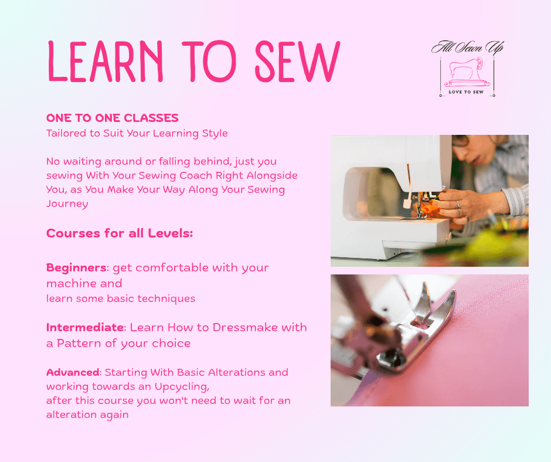

One to One Sewing Classes
Arts and crafts
Sewing classes, in person or online. All levels available, or customised, of course. Beginners Sewing Course, for absolute beginners or rusty sewists: learn all about the sewing machine, how it works, setting it up, and getting comfortable using it. Intermediate Sewing Course, for those who have the basics: learn about measuring the body, and reading and understanding a dressmaking pattern, working through a sewing pattern while being coached along the entire process. Advanced Course, for those who have the basics: learn practical alteration techniques such as hemming, zip replacement, resizing, and upcycling techniques and projects.
Verified 2026-01-13T06:50:02
Contact: 083 044 0834 · jenmdn@gmail.com
Address: 6 Woodbury
View on Google Maps →
Visit Website
View on Google Maps →